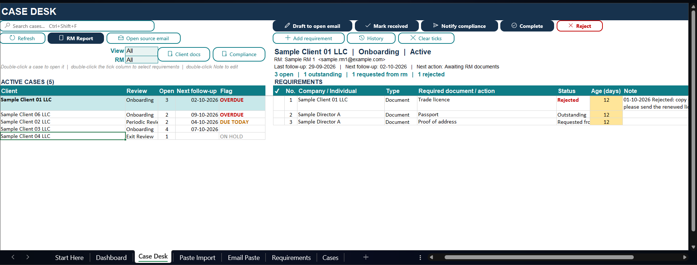
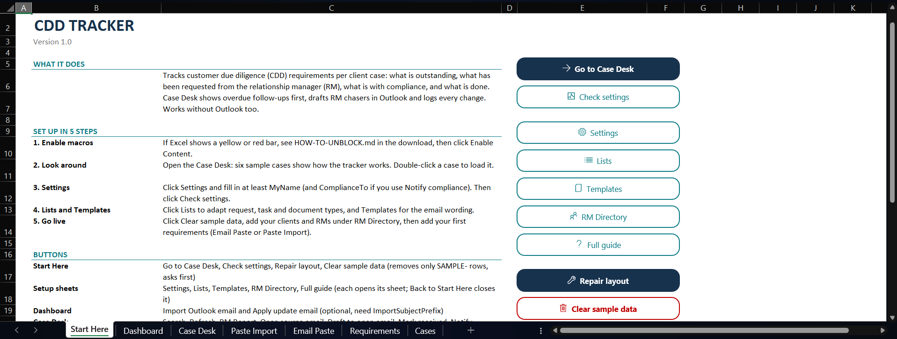

CDD Tracker
An Excel workbook for tracking customer due diligence requirements per client case, chasing relationship managers (RMs) and handing documents over to compliance.
Free · Windows Excel desktop · Includes the workbook, full VBA source, README and license. Unblock the zip before extracting (how).
SHA-256 of CDD-Tracker-v1.0.zip:
2cc2bef822a929a70889fbeb0c9a63484c811dc48b06e64f2fb22f2ddf571f7e


What it does
- Case Desk: one screen per case. Overdue and due-today follow-ups come first. Tick requirements and move them along: Mark received, Notify compliance, Complete, Reject.
- Clear statuses: Outstanding → Requested from RM → Received, awaiting compliance → Sent to compliance → Completed.
- RM chasers: put a case's open items into the email you have open in Outlook, or build an RM Report with one Outlook draft and one Excel file per RM.
- Compliance handover: drafts an email listing the documents that are ready, with an optional folder link.
- Quick entry: paste a requirement list from any email. Optional Outlook import for emails in a fixed format.
- Audit trail: every status change, note and follow-up is logged.
- Dashboard and automatic backups before imports and bulk updates.
- Your data stays with you. The workbook sends nothing anywhere. Email features only create drafts for you to review.


Requirements
- Windows with Excel desktop (Microsoft 365 or Excel 2016 or later).
- Classic Outlook for Windows is optional, only for email drafts and Outlook import. The new Outlook and Outlook on the web cannot be used by Excel macros.
- Mac is not supported.
Set up in 5 steps
- Download the zip and unblock it before extracting (see below).
- Extract the folder and open
CDD-Tracker.xlsm. Click Enable Content if asked. - Read the Start Here sheet.
- Click Settings and fill in at least
MyName, plusComplianceToif you will use Notify compliance. Then click Check settings. - Explore the six sample cases on the Case Desk, then click Clear sample data when you're ready to use your own.
Unblock the download
Windows blocks macros in files downloaded from the internet. This is a normal security feature. Do this once:
- Right-click
CDD-Tracker-v1.0.zipand choose Properties. - On the General tab, tick Unblock, then click OK.
- Extract the zip. Everything inside is now unblocked.
Already extracted? Close Excel, right-click CDD-Tracker.xlsm › Properties › tick Unblock › OK. On a work computer, your IT team may block internet macros completely; ask them before trying workarounds. Every line of code is in the src folder as plain text for review. Full guide: HOW-TO-UNBLOCK.md.
Disclaimer
Free, unofficial tool provided as is, without warranty. It is not legal, regulatory or compliance advice and does not replace your firm's AML/CFT policies, procedures, screening systems or the judgement of your compliance officer. Before entering client information, confirm your firm's data protection policies allow it. This is a personal project, not affiliated with any employer, firm or regulator. Full disclaimer.
License
Creative Commons Attribution-NonCommercial 4.0 International (CC BY-NC 4.0). Free to use and adapt for non-commercial purposes with attribution. License text.
Changelog
1.0 · 4 October 2026
First public release: Case Desk, RM chasers and RM Report, Notify compliance, Email Paste and Paste Import, optional Outlook import, editable lists and templates, Repair layout, automatic backups and six fictional sample cases. Full changelog · Full README.
Planned for 1.1: renamable statuses.